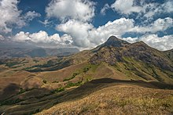
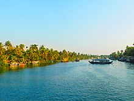
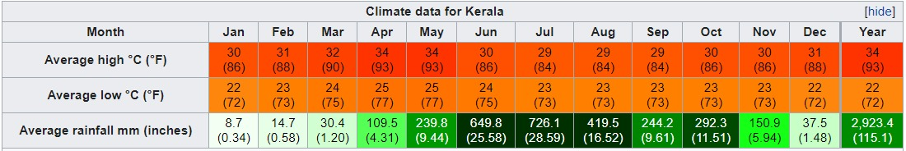

GEOGRAPHY OF KERELA


Geographically, Kerala can be divided into three climatically distinct regions: the eastern highlands;
rugged and cool mountainous terrain, the central mid-lands; rolling hills, and the western lowlands; coastal plains.
Pre-Cambrian and Pleistocene geological formations compose the bulk of Kerala's terrain.
A catastrophic flood in Kerala in 1341 CE drastically modified its terrain and consequently affected its history;
it also created a natural harbour for spice transport. The eastern region of Kerala consists of high mountains,
gorges and deep-cut valleys immediately west of the Western Ghats' rain shadow.110 41 of Kerala's west-flowing rivers,
and 3 of its east-flowing ones originate in this region. The Western Ghats form a wall of mountains interrupted only near Palakkad;
hence also known Palghat, where the Palakkad Gap breaks. The Western Ghats rise on average to 1,500 metres (4,900 feet) above sea level,
while the highest peaks reach around 2,500 metres (8,200 feet). Anamudi in the Idukki district is the highest peak in south India,
is at an elevation of 2,695 m (8,842 ft). The Western Ghats mountain chain is recognised as one of the world's eight "hottest hotspots"
of biological diversity and is listed among UNESCO World Heritage Sites. The chain's forests are considered to be older than the Himalaya mountains.
Climate
With around 120–140 rainy days per year, Kerala has a wet and maritime tropical climate
influenced by the seasonal heavy rains of the southwest summer monsoon and northeast winter monsoon.
The moisture-laden winds of the Southwest monsoon, on reaching the southernmost point of the Indian Peninsula,
because of its topography, divides into two branches; the "Arabian Sea Branch" and the "Bay of Bengal Branch".
The "Arabian Sea Branch" of the Southwest monsoon first hits the Western Ghats,
making Kerala the first state in India to receive rain from the Southwest monsoon.
In Kerala, the influence of the Northeast monsoon is seen in southern districts only.
Kerala's rainfall averages 2,923 mm (115 in) annually. Some of Kerala's drier lowland regions average only 1,250 mm ;
During the summer, the state is prone to gale-force winds, storm surges,
cyclone-related torrential downpours, occasional droughts, and rises in sea level 26, 46, 52 The mean daily temperature ranges from 19.8 °C to 36.7 °C.
Mean annual temperatures range from 25.0–27.5 °C in the coastal lowlands to 20.0–22.5 °C in the eastern highlands.
